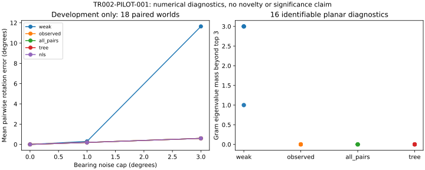

T0 / 解析已知答案测试集
核验状态：有手工推导草稿，无测试程序
N=2 两非平行方向、共同平面、树/桥/断图、共线退化；真值旋转不总是单位阵。固定规范自由度，分别检查代价最优、SO(3) 可行和物理唯一性。
适用范围与准入条件
证明先独立复核。用解析最优值或有效下界判定；随机搜索未找到更优解不能充当全局真值。
仅针对王英建《博士论文.pdf》第4章及 arXiv:2401.07784v1；不是TR-001。协议配额仍是设计值；本页最新先导节引用experiments/results/summary.json中的真实运行结果，明确与计划、原论文结果区分。
8类故障注入被拒绝。弱SDP有3次TIME_LIMIT，均保留。所有270次开发运行均返回通过本轮浮点可行性检查的候选，但这不等于全部收敛，更不是严格认证。
16个可辨识平面诊断中，弱SDP的前三特征值之外尾谱约1至3；观测边、全对和生成树加强均在预设容差内恢复真值Gram。该结果支持解析动机，但加强约束和生成树仍是现成强基线。
2个开发实例中，弱SDP数值秩为3、状态为OPTIMAL，却含接近−1行列式的相对块；投影到SO(3)后代价明显增大。不能把秩3和求解器状态当作原SO(3)问题的全局证书。这里是自建基线及其舍入结果，不是原作者完整算法复现。
D5探索性分析：36条含噪日志分别评价生成树和观测边两种加强，共72个界计算；有效尾谱界为0。这是“下界图不连通或上界不小于tr(X)”的判据，说明该粗界在本批输入上没有信息，不代表定位必然失败。
加强约束、生成树和几何初始化NLS在本批输入上的误差接近。下一步优先研究更有用的含噪界与真正超出这些基线的决策机制；当前不支持新方法优越性声明。

| 噪声上界/度 | 方法 | 数值可行/尝试 | 世界内平均相对旋转误差再跨世界平均/度 | 每观测数值gap中位数 |
|---|---|---|---|---|
| 0 | 弱SDP | 18/18 | 0.00112257 | 5.6e-08 |
| 0 | 观测边加强 | 18/18 | 1.17755e-05 | 1.44e-09 |
| 0 | 全对加强 | 18/18 | 1.81779e-05 | 1.09e-09 |
| 0 | 生成树加强 | 18/18 | 1.0966e-05 | 2.22e-09 |
| 0 | 几何初始化NLS | 18/18 | 2.63031e-13 | 9.32e-10 |
| 1 | 弱SDP | 18/18 | 0.297139 | 1.87e-07 |
| 1 | 观测边加强 | 18/18 | 0.195496 | 1.09e-09 |
| 1 | 全对加强 | 18/18 | 0.195497 | 1.16e-09 |
| 1 | 生成树加强 | 18/18 | 0.195504 | 2.42e-09 |
| 1 | 几何初始化NLS | 18/18 | 0.1955 | 1.06e-09 |
| 3 | 弱SDP | 18/18 | 11.6468 | 2.64e-07 |
| 3 | 观测边加强 | 18/18 | 0.597417 | 2.29e-09 |
| 3 | 全对加强 | 18/18 | 0.597412 | 1.25e-09 |
| 3 | 生成树加强 | 18/18 | 0.59747 | 4.72e-09 |
| 3 | 几何初始化NLS | 18/18 | 0.59744 | 1.13e-09 |
v1断图提取实现出错并停止，原始失败保留；v2改为分连通分量处理，读取开发集前重跑全部诊断。主运行耗时约164.5秒，cgroup峰值内存约478.0 MiB。2 CPU／2 GiB、单worker、无GPU；共享宿主负载，因此不据此声称算法实时性或正式速度优势。
Only rotation subproblem, exact rotation odometry and synchronized paired bearings; no translation, FoV, collisions, closed-loop or real flight.
18 development worlds, one per stratum; noise variants are paired, not 54 independent worlds; no held-out evaluation or significance claim.
All PSD/duality checks are floating-point; no interval verification or rigorous global-optimality certificates.
NLS is one geometry-initialized run, not full multi-start or temporal warm-start B4; no method-superiority conclusion.
Only SCS backend tested; precision reruns are not independent-solver replication.
15-second SCS limit and 150 NLS evaluation limit are diagnostic settings; complete 60-second end-to-end budget enforcement and fair timing remain pending.
CPU shared with host; timings descriptive only. No novel selector implemented; tree and convex-hull constraints are baselines.
v1 failed on disconnected-graph extraction; all failed evidence retained and all diagnostics rerun after component-aware fix.
实验与复测说明 · 先导协议v2 · 结果、哈希与逐项界记录 · PNG图。完整数据与矩阵保存在本课题被忽略的runs目录，不上传原始资料。
仅为 Python/Julia 数值环境和已知答案求解器验收；没有实施无人机算法、正式 benchmark、训练或实机实验。
| 项目 | 实测/核查记录 |
|---|---|
| 容器操作系统 | Debian 12 Bookworm；宿主系统未改动 |
| Python / 科学包 | Python 3.10.22；NumPy 2.2.6；SciPy 1.15.3；Matplotlib 3.10.3；h5py 3.14.0 |
| Julia / 求解器 | Julia 1.11.3；JuMP 1.32.1；SCS.jl 2.7.1；SCS_jll 300.300.100+0 |
| 资源限制 | 实际 cgroup：2 CPU 配额、4 GiB 内存、0 Swap、256 PID；Julia/BLAS 各 1 线程 |
| 运行隔离 | UID 1000；只读根文件系统；关闭网络；无 GPU、端口、Docker socket；drop ALL capabilities、no-new-privileges |
| 文件边界 | 仅挂载本次 TR-002 runs/ 输出目录；/tmp 为 512 MiB tmpfs；未挂载其他课题、宿主 home 或论文 |
| 依赖复现 | 基础镜像摘要固定；Python wheel 哈希锁；Julia Manifest；已核对镜像内3个锁/项目文件与仓库逐字节一致 |
| 本次镜像大小 | 1.58 GiB（逻辑大小，不等于 Docker 缓存的总占盘） |
| 本次验收内存 | cgroup memory.peak = 480960512 bytes，约 458.7 MiB；不是完整实验预算 |
| 检查 | 结果 |
|---|---|
| 导入与依赖 | 通过：科学包导入、pip check |
| 文件/数据 | 通过：HDF5 读写、Python→Julia→Python 矩阵向量往返 |
| 数值工具 | 通过：SciPy 对称特征值、无显示器 SVG 输出 |
| 2×2 已知答案 SDP | SCS 状态 OPTIMAL；目标 -8.26158316212e-09（真值0）；对角误差 1.08e-13；最小特征值 -4.13e-09；通过 1e-5 浮点容差 |
| 容器退出 | ExitCode=0；OOMKilled=false；本次容器已删除，镜像与原始验收日志保留 |
本次约459 MiB仅是小型验收的峰值，不能外推无人机数量、完整 SDP、Monte Carlo 或闭环实验的内存/速度。
小 SDP 的微小负目标和负特征值按浮点容差验收，不构成严格全局最优证书；独立证书检查器尚未实现。
运行时长包含 Julia 启动/JIT，不是算法延迟；容器共享宿主内核和负载，CPU配额不是独占核。正式性能实验须控制宿主负载并记录硬件/线程。
目前只验证 Linux/amd64 和本机 Docker 28。构建使用带资源限制的 legacy builder，官方已提示弃用，后续需迁移到有资源上限的专用 BuildKit builder。
锁定依赖不代表强基线已适配；原 bearing 目标、数据生成器、独立检查器和完整 benchmark 仍待实现与先导验收。
未调用 GPU、ROS/Gazebo、实机或付费模型；未改宿主 Python/Julia，也未提交或推送本次改动。
构建与复测：容器说明 · 构建脚本 · 验收脚本 · Dockerfile · 实际验收记录。
搭建前历史评估；其中“未安装/未验收”为当时状态，最新环境执行记录见本页容器验收节。本轮完成只读环境盘点、固定版本强基线源码核查和依赖元数据核查；未安装环境、未执行研究实现/求解器/仿真。配置为待验收提案，不是测得的最低配置或实时性保证。
| 项目 | 提案 | 条件 |
|---|---|---|
| 首轮环境 | Ubuntu22.04 + Python3.10 + Julia1.11.3，Float64；CPU稀疏直接SCS起步 | 锁定依赖后验收；不改全局Python，不安装ROS/Gazebo作为首轮前提。 |
| 首轮规模 | 24个解析诊断实例；18开发世界×3噪声=54日志；N=4/8主场景 | 每条日志先5个配置：弱SDP、观测边加强、全对加强、生成树加强、热启动NLS。新策略待其定义/实现验收后加入。 |
| 线程 | worker=1；Julia计算线程=1，BLAS线程=1；OpenMP线程=1（适用时） | 在进程内读取实际线程/BLAS后端确认；环境变量设置不等于全部线程已受控。Julia JIT编译时间独立记录。 |
| GPU | 首轮不启用CUDA或GPU求解；不依赖现有GPU空闲 | GPU只在未来SITL渲染/视觉前端有明确需求时进入配置，不采购多卡。 |
| 工作空间 | 依赖缓存/虚拟环境、datasets、runs都限定在TR-002目录 | 先导前预留至少30GiB工作空间作为资源策略；95G剩余盘空间可支持此预留，但仍须监测。 |
| 是否能立即正式跑 | 不能据现状判定就绪：Julia不可见、求解器缺失、环境未验证，资源也有竞争 | 可以继续配置设计与安装准备；正式性能数据要在受控资源下采集。当前没有发起安装。 |
| 部分 | 配置 | 核查边界 |
|---|---|---|
| Python | 候选NumPy2.2.6 / SciPy1.15.3 / Matplotlib3.10.3 / h5py3.14.0 | 已核查PyPI的Python版本要求、NumPy依赖范围和cp310 manylinux x86_64轮子；不是声称最新版，未安装/import验证；其余传递依赖及哈希需解算后锁定。 |
| Julia | 以官方README测试版本1.11.3作为复现起点；JuMP、SCS版本待兼容性解算 | 官方requirements.jl只列包名，不锁版本。需独立Project.toml/Manifest.toml、Julia版本及BLAS后端记录，不能直接在全局环境运行Pkg.add。 |
| 数据交换 | Python端JSON/HDF5输入与JSONL输出；Julia端采用经验证的IO依赖 | Julia侧JSON/HDF5适配包需一并锁定；索引0/1、数组维度、矩阵转置、单位及时间戳要做往返检查。Python有h5py不意味着Julia自动能读。 |
| 证书检查 | 独立目标/约束重建；严谨谱下界的区间或向外舍入工具未选定 | 数值残差轨可以先定义；严格认证轨在验证工具完成前保持未就绪，不把SCS solved状态升级为严格证书。 |
| 当前Docker | 客户端与服务端均返回28.3.3；只检查版本 | 可用作后续复现封装，不代表所需镜像已存在或求解器可运行；无容器创建，无系统升级。 |
| 隔离路径 | workspaces/bearing-swarm-review/.venv/python、.venv/julia-runtime、.venv/julia-depot；未来env/用于可跟踪锁文件 | 均为设计路径，当前未创建运行环境。Python禁用用户site继承，Julia显式选择项目并禁用个人startup；不复用TR-001/TR-003环境。 |
| 问题 | 源码事实 | 本项目要求 |
|---|---|---|
| 约束覆盖 | 固定提交源码43行只为非零相对旋转观测块加conv(SO(3))约束 | 原样实现对应观测边加强；全对加强必须标为本项目适配变体。不要填假观测来激活约束，因为会影响代价。 |
| 目标与缩放 | 源码构造Hessian相关目标、默认重缩放，并执行最大化 | 适配需直接保留原bearing M，明确符号/常数/尺度映射；在相同可行旋转上验证目标一致。 |
| 输出与认证 | 返回投影后旋转、启发式秩和求解状态/目标；没有返回完整原始Gram及全部对偶乘子 | 需保留投影前解与对偶、重算投影后U；秩和solver状态都不能代替独立证书。 |
| 预算参数 | 默认500000迭代、eps_abs=1e−5、eps_rel=1e−6、eps_infeas=1e−8 | 原参数复现与公平比较配置分开。只读审计未证明其在当前Julia环境可以运行。 |
| 项目 | 提议设置 | 解释 |
|---|---|---|
| 统一SDP比较配置 | eps_abs=1e−6，eps_rel=1e−6，eps_infeas=1e−8，max_iters=500000 | 待先导冻结；只用于共享SDP后端，不能将其机械等同NLS停止条件。 |
| 精度敏感性 | 在开发实例检查1e−5/1e−6/1e−7绝对与相对容差档位 | 每档所有同类方法使用相同条件；仍用独立gap评估。容差不等于真实解误差，更不保证gap≤1e−6。 |
| 离线限时 | 初拟每实例60秒在线计算预算，建立模型/优化/独立检查都计入 | SCS time_limit_secs仅限制求解部分，外层必须计时剩余预算并保留部分结果/失败；不是允许三阶段各花60秒。 |
| 编译与冷启动 | 记录首次启动/编译；另报常驻进程下的稳态端到端时间 | 预热只用开发实例且不传测试解；不得把即时编译时间选择性算给某基线。轨迹热启动只来自同任务过去数据。 |
| 闭环限时 | 旧草案1秒/决策仍为目标，不能写成已达成 | 先导不满足时明确延迟/任务失败，或在测试前统一修订控制周期；不事后放宽本方法时限。 |
| 记录量 | 按求解输出summary与必要检查信息，抽样保留详细诊断 | SCS官方说明逐迭代CSV可能显著减速；完整日志调试轨与正式性能轨分开，所有方法执行相同记录策略。 |
| 项目 | 观察 | 限制 |
|---|---|---|
| 内存/磁盘 | 本轮盘点可用内存约7.4GiB，Swap约30GiB已用、仅127MiB空余；工作分区可用约95G | 是瞬时状态，不将高Swap占用本身当性能结论。 |
| 短时负载 | vmstat后两条1秒采样CPU idle约36–37%，swap-in为100/84 KiB/s，swap-out为0 | 仅2秒增量观察，表明当时有其他活动与少量换入；不能据此预测长时负载或断言持续换页风暴。 |
| 可见Python | NumPy2.2.6、SciPy1.8.0、Matplotlib3.5.1；h5py/cvxpy/scs/clarabel未发现 | 只读包元数据，无科学包import/求解测试；不把此混合环境视为验收通过。 |
| 工具 | gcc/g++/cmake/git/time可见；Julia/juliaup未在PATH发现 | 编译器存在不等于全部依赖齐全。 |
| GPU | 4070 Ti SUPER 16GB，盘点时约3051MiB已用、利用率31% | 首轮CPU配置不依赖此显卡，未终止任何用户进程。 |
| 阶段 | 判据 | 说明 |
|---|---|---|
| 首次诊断 | 建议启动时MemAvailable≥8GiB，工作盘空闲≥30GiB，单worker | 这是本项目保守运行策略，不是算法最低硬件要求；当前快照未达到内存余量建议。 |
| 正式计时 | 至少先观察60秒背景负载与换页，记录CPU分配/频率策略/线程及内存压力 | 不以本轮2秒观察作为正式验收；不自动关闭用户应用。 |
| 并发决策 | 以先导各方法最大峰值P（GiB）估算；可用内存A，保留H=4GiB，倍率s=1.5：W_mem=floor((A−H)/(sP)) | 实际W不超过CPU配额/每worker线程与W_mem；≤0时不开新worker。P必须覆盖Julia/求解器子进程，不能只量Python调度器。 |
| 默认上限 | 正式延迟比较W=1；吞吐批处理首轮最多W=2，再由先导决定 | 共享缓存/内存带宽仍可能干扰，吞吐与算法单次延迟分开报告。 |
| 升级判据 | 清晰空闲环境下单worker峰值仍逼近可分配内存，或所需吞吐无法在32GB内实现时，再考虑64GB | 先降并发、改善稀疏表示和日志策略；不通过删掉困难样本降低资源。更换机器后重测全部性能基线。 |
| 配额 | 调用数 | 累计时长情景 |
|---|---|---|
| 54日志×5配置 | 270次调用 | 平均1/10/60秒时，仅调用总时长约4.5分钟/45分钟/4.5小时 |
| 24诊断×5配置 | 至多120次调用 | 若均60秒则2小时；不适用的组合标原因，诊断不是统计样本 |
| 1620测试日志×8主配置 | 12960次调用 | 平均1/10/60秒时，单worker约3.6/36/216小时；8配置为预算例，额外消融/窗口/种子另计 |
以上均为算术情景而非实测预测；不承诺双worker恰好减半。预处理、编译、独立验证、重试和闭环还需按口径计入。正式样本量需先导功效分析，不按预算凑出显著性。
numpy 2.2.6；Python >=3.10；cp310/Linux x86_64 wheel已在元数据中找到；metadata only; not installed or imported
scipy 1.15.3；Python >=3.10；cp310/Linux x86_64 wheel已在元数据中找到；metadata only; not installed or imported
matplotlib 3.10.3；Python >=3.10；cp310/Linux x86_64 wheel已在元数据中找到；metadata only; not installed or imported
h5py 3.14.0；Python >=3.9；cp310/Linux x86_64 wheel已在元数据中找到；metadata only; not installed or imported
先把配置作为评审规格锁定；后续实施时先建TR-002独立环境和小规模验收，不改其他课题。
先导需实测包import/IO往返、弱/强模型一致性、诊断答案、时间/峰值内存与检查器；通过后才冻结依赖全量锁文件、并发和正式测试规模。
本轮仅配置评估与文档更新；没有研究安装、算法实现、仿真或训练结果，也未自动继续推送新修改。
ICCV2025固定提交求解器源码 — 静态全文审阅；约束/目标/输出/参数差异已列出，未运行。
ICCV2025固定提交依赖文件 — 包名清单，不是依赖锁文件。
SCS官方设置 — 查验容差、求解限时和逐迭代日志；实际绑定版本仍待锁定。
Julia命令行官方说明 — 核查项目选择、个人启动文件和线程控制；实际采用1.11.3时需匹配该版本支持。
SciPy1.15.3发行元数据 — 与其余3个候选包JSON元数据一并核对Python要求和wheel存在性；不是运行验证。
先建立可重放的数值测试集，再加入运动—观测闭环。当前执行主机具备开展小规模开发的硬件基础；先导前不能保证全量运行时间或实时性。当前路线不需要大模型训练或多卡GPU。
| 层次 | 规模 | 内容 |
|---|---|---|
| S0 / 解析诊断 | 拟6类×4个固定坐标/姿态变换，共24个诊断实例 | 两非平行方向、共同平面反射/高秩、加强树、桥边、断图、共线退化；附适用的解析最优值/非唯一性标签。非唯一问题不强行要求恢复唯一真值；24个实例不用于统计优越性。 |
| S1 / 固定观测核心集 | 18个分层；180开发世界/540日志，540留出世界/1620日志 | N=4/8 × 树/环/稠密 × 平面/近共面/三维；每世界0°/1°/3°噪声。先只取开发集每层1世界，共18世界54日志做冒烟验证，属于开发集，不碰留出集。 |
| S2 / 闭环任务集 | 3场景类×2群规模；60开发任务、180留出任务 | 无障碍、随机障碍、遮挡通道；N=3/5。同起终点/环境下各策略独立飞行、生成观测；保持原速度/加速度、避障和互视语义。统计样本量与未定环境参数仍按协议冻结。 |
| S3 / 压力与泛化 | 单列，不混入核心均值；配额待先导后冻结 | N=16/32、5°/10°噪声、里程计漂移、丢测、时延、外参偏差、短时断图；分别标注哪些已超出理论假设。 |
| 部分 | 规格 |
|---|---|
| 实例定义 | 一个world是完整群体场景与轨迹配置；同world的噪声版本、窗口和机器人必须归属同一split。基线共享相同观测文件，方法特有随机种子另外记录。 |
| 场景 | world_id、分割、机器人数量、地图/障碍、初始位姿、轨迹控制点/任务目标、动力学/视场/可见性参数、图掩码、所有随机种子与版本。离线图掩码与闭环物理可见性不能混称。 |
| 观测 | 每条记录包含时间、观测机器人ID、目标机器人ID、本地相机系单位方向、对应里程计时间索引、权重/噪声模型、标定版本、有效性/丢失原因。首版统一精确同步；时延与异步另开压力轨。 |
| 里程计 | 每台机器人自己的相对/局部SE(3)里程计、时间、坐标约定及单位；理论轨精确旋转里程计，漂移轨另标。主轨不提供相对距离、绝对GPS或深度作为估计输入。 |
| 评估真值 | 世界系真实位姿、相对位姿、真实可见性/碰撞状态及适用的解析答案。单独存放且在线方法不可读取；真值位姿用于仿真生成方向合法，但不能冒充真实相机实验。 |
| 结果 | 每方法每实例输出估计、U/L/gap及认证等级、约束选择、动作、时间/内存、失败原因；评估器追加真值误差。不能仅保存最终均值或漂亮轨迹图。 |
| 格式与目录 | 建议JSON配置/manifest + HDF5数值数组 + JSONL逐次结果，汇总CSV。小配置/协议进Git，大数组/结果放预先设为忽略的datasets/runs目录；实施时核验既有忽略规则，不把原论文摘录纳入数据发布。 |
| 环境 | 配置 | 边界 |
|---|---|---|
| E0 数值与固定日志 / 先建设 | 沿用现有Ubuntu22.04 x86_64；独立Python3.10虚拟环境承担生成/统计，Julia1.11.3 + JuMP/SCS对齐强基线；Float64默认 | 无需ROS、Gazebo、CUDA或神经网络训练。NumPy/SciPy/HDF5/绘图依赖在适配时验证并锁版本；Julia包用Project/Manifest固定，不能仅写安装最新版。 |
| E1 轻量闭环 / 第二步 | 同一数值环境，加入原任务轨迹/控制接口、运动积分、几何遮挡/FoV与按时间产生的bearing/里程计 | 不渲染图像即可研究几何与规划，但不能据此声称验证真实视觉检测或完整飞行动力学。积分误差用步长收敛和独立几何校验；不让生成器与评估器共用同一错误。 |
| E2 飞控在环 / 后置可选 | 有必要时隔离部署PX4 SITL + Gazebo，选择经验证的固定版本/镜像digest | 官方有PX4 v1.17 Gazebo文档；具体平台组合和多机性能尚未安装验证，不承诺一键兼容。首轮不以安装庞大仿真平台为前置条件，也不升级当前主机系统。 |
| 独立验证环境 | 检查器独立重建原目标；小问题可增加第二求解器/更高精度路径；正式计时与跨实现检查分轨 | 区间/向外舍入的证书依赖尚未选型验证；浮点检查不写成严格证书。MATLAB/SeDuMi只在精确复现原实现时单独需要；MOSEK仅用于选择的补充基线且先核验许可证。 |
| 可复现运行 | 虚拟环境/容器隔离、依赖锁文件、代码与输入散列、固定线程/种子、运行清单、断点续跑、逐实例失败记录 | Docker命令存在不等于daemon/权限/镜像可用；容器不代替版本和公平计时。数学求解性能测试避免与浏览器、大编译、渲染或其他高负载同时竞争。 |
| 阶段 | 建议 | 依据与限制 |
|---|---|---|
| 小规模开发 / 建议起点 | 4–8个现代CPU物理核、16–32GB RAM，预留20–50GB工作空间；无独显也可开始S0/S1 | 工程规划值，不是测得最低门槛。先单进程、小实例，记录峰值RSS和时间；没有已测实时保证。 |
| 正式核心数值仿真 / 优先复用现机 | 8核CPU、32GB RAM可作为先导配置；空闲资源充分后逐步尝试1–2个worker | 不据此承诺全部强松弛的性能。若峰值内存/并发成为瓶颈再考虑64GB；CPU线程、内存、求解精度和预算先固定。 |
| 存储 | 先为环境、数值日志和调试产物留20–50GB；正式阶段按实际体积估算，100–200GB空闲作为含容器/多轮产物的宽裕预留 | 不是原始bearing数组需要数百GB。图像/视频默认不生成；按需保留代表性可视化，避免为每次迭代保存完整矩阵。 |
| GPU | 当前数值主线无需GPU；若后期做Gazebo渲染/真实视觉前端再使用现有16GB显存GPU | SCS有CPU求解路径；GPU不会自动加速当前Julia/SCS调用。没有理由现在采购A100/多卡；现卡对某多机渲染配置是否够用仍需实测。 |
| 批量扩展 | 多世界可分批/断点续跑；只有先导确认吞吐不足时再使用更多CPU节点或内存 | 同一性能表用相同硬件/限制；不把不同机器的墙钟时间直接比较。并发数依据worker峰值内存及CPU配额设定，而不是逻辑线程数全开。 |
| 项目 | 检查结果 |
|---|---|
| 盘点对象 | 当前执行主机；2026-11-11的瞬时只读快照，不推断其他电脑/服务器配置 |
| 系统 | Ubuntu22.04.5 LTS；Linux6.8.0-138-generic x86_64 |
| CPU | AMD Ryzen 7 9700X，8物理核/16逻辑线程；来自lscpu |
| 内存 | 系统显示总计30GiB（约32GB标称），available约7.5GiB；Swap总30GiB、已用约29GiB。不能仅据Swap占用断言正在换页，但正式计时需监测换页/内存压力。 |
| GPU | RTX4070 Ti SUPER，16376MiB显存，其中盘点时2948MiB已用；驱动575.64.03。未测负载性能。 |
| 磁盘 | 工作目录所在分区约1.1T，总使用率92%，可用约96G；由df -h读取，随其他任务变化。 |
| 命令可见性 | Python3.10.12、Docker28.3.3与nvidia-smi可调用；julia/matlab未在PATH发现，不等于机器任何位置都没有安装。未检查Docker daemon、Julia包或求解器可运行性。 |
| 判断 | 无需先采购计算设备，可以在资源空闲后做小规模开发；当前不宜直接启动全量并行或正式计时。没有结束用户任务、清理文件或修改系统。 |
主变量X的维度为3N×3N，N=8时24×24、N=32时96×96；全对加强数量分别28和496。它们只是模型结构，不代表求解器完整工作内存或复杂度，不能用矩阵大小推断运行极快。
存储量级例：8机、100时刻、56条有向边、每方向3个Float64，仅方向数组为134400字节/日志；2160条开发+测试日志即使全按此上界计算也约0.27GiB。时间戳、里程计、矩阵与运行结果另计，闭环长序列更大；这是解析预算，不是实测文件大小。
运行时间例：若1620条测试日志×8个方法配置×每次60秒，单worker累计求解预算为216小时，尚未计加载/检查/额外种子/闭环。这是每日志仅一次求解的预算算例，不是预测或实际耗时；窗口数和重复数都会放大。
实施后的顺序：24诊断实例→开发集54条冒烟日志→测各方法峰值RSS/P50/P95/成功率→决定线程与并发、正式样本量和时间预算→冻结后再跑留出集。严格性能计时优先单worker；批处理吞吐另测。
| 项目 | 验收要求 |
|---|---|
| 环境 | 能在干净隔离环境读取一实例、运行弱/强/树/NLS、重算输出；记录依赖/硬件/线程与许可证。 |
| 数据 | 可从固定种子重建相同输入；坐标/时间/单位检查通过；GT与算法接口隔离，开发/测试无world泄漏。 |
| 仿真 | 无噪已知答案和退化标签正确；噪声统计与声明的上界一致；闭环观测由实际位姿重生成，几何碰撞/遮挡检查和积分步长验证通过。 |
| 资源 | 先导记录实际峰值内存/磁盘/延迟；正式计时无明显内存压力或竞争负载，失败/超时保留。未满足则降低并发或调整配置，不能用删除困难实例解决。 |
| 当前边界 | 以上均为待执行验收，不是已通过。用户当前选择仿真优先，不代表实机启动；当前尚未安装研究环境或启动研究实现。 |
ICCV2025 anisotropic-ra官方实现 — README注明Julia1.11.3、JuMP/SCS；前轮锁定commit。
SCS官方线性求解器文档 — 支持CPU稀疏直接等路径；GPU为可选后端。硬件配额是本项目规划估计，不来自官方性能保证。
PX4 v1.17 Gazebo官方文档 — 仅核查后续可选SITL路线，未安装或验证多机性能。
| 部分 | 状态 | 依据 |
|---|---|---|
| 旋转子问题先导 | 已实际完成，非正式留出 | TR002-PILOT-001：24诊断、54开发日志、390主运行＋30复查；3次弱SDP限时保留。严格证书、平移/闭环、完整强基线与独立复验未完成。 |
| 独立数值容器 | 环境验收已通过 | 2026-11-11：锁定依赖的 Python/Julia/JuMP/SCS 容器通过已知答案小SDP等验收；详细真实记录见本页容器节。研究 benchmark 可靠性仍未验证。 |
| 研究问题与证据分层 | 已写明 | 固定原方位角/里程计输入与原目标，分开认证、真值误差、闭环收益。 |
| 主 benchmark 协议 | 已设计，待冻结 | 场景、分割、噪声、对照、指标和退出规则已给出；没有生成数据或运行方法。 |
| 公开基线 | 来源和版本已核查 | ICCV 2025 代码 README 与 commit 已核查；尚未安装、适配或执行。 |
| 公开实测 benchmark | 候选，尚未接入 | Omni-swarm 优先审计；MR.CLAM 只适合二维辅助；MILUV 不直接满足互方位输入。 |
| 可执行与统计可靠性 | 数值先导部分通过；统计与严格认证未验证 | 本轮8类故障注入、已知答案、跨Python/Julia目标与完整对偶浮点检查通过；独立求解器、严格谱界、统计功效和留出评测待完成。 |
| 闭环与真实飞行 | 仍有冻结项 | 动作库、几何安全参数、硬件时限和日志可用性待落实；不能现在宣称具备实机可靠性。 |
| 问题 | 实验设计 | 判据 |
|---|---|---|
| Q1 证书是否可信 | 同一输入/同一目标，独立审计上、下界；已知答案和可构造反例 | 一例超过误差界的错误认证即阻断认证主张；未认证不等于非最优。 |
| Q2 选择性加强是否有价值 | 弱、全对加强、观测边加强、生成树、等数量随机/谱策略、新策略 | 在相同墙钟预算和观测下比较差距、误差、延迟；若简单生成树已同样好，收窄或否决创新。 |
| Q3 联合选择是否省运动 | 相同运动库和安全检查，估计器与规划器因子对照 | 比较飞行代价—定位误差—认证覆盖的 Pareto 关系；不能只比较证书率。 |
| Q4 是否可迁移 | 冻结方法后，独立实测数据和超出假设的压力场景 | 实测日志只能验证回放估计；闭环收益必须由可交互仿真/实飞另证。 |
核验状态：有手工推导草稿，无测试程序
N=2 两非平行方向、共同平面、树/桥/断图、共线退化；真值旋转不总是单位阵。固定规范自由度，分别检查代价最优、SO(3) 可行和物理唯一性。
证明先独立复核。用解析最优值或有效下界判定；随机搜索未找到更优解不能充当全局真值。
核验状态：规格已写，数据/生成器/评测器尚未实现
原方位角与里程计任务，独立真值、可审计噪声、固定输入；检验加强约束是否有剩余价值。
数据清单、生成器版本、随机种子、评测器版本和散列全部冻结后，才可称可复现 benchmark。不能称领域公认标准。
核验状态：因子实验已设计，控制与安全配置未全部冻结
3/5 架 UAV，相同起终点、动力学、观测预算、动作库和安全检查，比较闭环路径/时间与定位质量。
必须重新生成各策略实际位置下的观测；不能用固定日志宣称主动规划收益。
核验状态：论文已读，未核验到原代码与原始日志
原文 §7.1 使用10控制点的 SE(3) B-spline、100里程计采样、100 Monte-Carlo；§8 已有2–4机器人真实实验，并非原稿缺少实机验证。
取得原代码/日志后逐项锁定实现；只有论文重建时明确标为 reconstruction，不称精确复现。
核验状态：官方代码/数据入口存在；仅入口和文档核查，未下载 rosbag
优先 Parallel1/2/3、RandFlight 室内序列的互观测与动捕；Outdoor1 无同等真值，不能当同精度基准。
确认原始方向、相机外参、时间同步、机器人 ID 和独立 VIO。关闭 UWB 不足以去掉回环/深度/地图位姿泄漏；融合后的里程计不能冒充独立 VIO。数据许可证另核验。
核验状态：官方检索信息可见；页面读取超时，未下载数据
5地面机器人、9组数据、里程计与距离/方位观测；只保留机器人间方向可研究辅助二维问题。
去除距离/固定地标输入并审计互测时序；SE(2)结果不能替代SO(3)/6DoF理论、无人机实测或闭环结论。
核验状态：官方传感器/示例已核查；互机器人方向输入未确认
多 UAV、IMU、相机、UWB、动捕适合误差与轨迹研究；AprilTag 示例不自动意味着互机器人方位观测。
除非独立前端能从真实图像提取所需方向，否则只作辅助；从动捕生成方向必须标为半合成，不能算真实 bearing 实验。
| 项目 | 规格 |
|---|---|
| 规模与结构 | 核心 N∈{4,8}；图∈{树、环、稠密}；轨迹族∈{平面、近共面、充分三维}，共18个基础分层。N=2用于解析诊断；N=16/32为后续规模压力，不混入核心平均。 |
| 轨迹生成 | 沿用原文10控制点、100里程计采样的结构；控制点分布、采样时间、近共面高度比等生成器参数须在看测试结果前冻结。方向必须由实际相对位姿和外参生成。树/环为显式测量掩码，不能声称它们自然满足真实遮挡/FoV。 |
| 噪声 | 主理论轨：角度上界 θmax∈{0°,1°,3°} 的单位球面帽噪声，方位角均匀，cosθ均匀于[cosθmax,1]；向量误差界 ξ=2sin(θmax/2)。精确旋转里程计用于验证理论。原文式(30)的加性噪声另作复现轨，先核对是否归一化。 |
| 开发集 | 每个基础分层10个独立世界，共180世界；各3个噪声条件，共540条观测日志。只用于调试、调参与样本量评估。 |
| 留出测试集 | 初始配额每分层30个独立世界，共540世界；各3个噪声条件，共1620条日志。这里的独立样本数是540，不是1620；同一世界的噪声版本和滑窗按簇处理。 |
| 样本量地位 | 30/层是初始资源配额，不是充分统计功效的证明。先导后按预先选择的最小有意义效应和配对方差决定是否扩大；在首次读取测试结果前冻结。分层不足时只给区间，不声称每层显著优越。 |
| 退化与排除 | 共线、断图、弱平移激励单列负对照。不得因某方法失败/证书率低而删场景。只按预先公开的无效输入规则拒收并保留拒收日志；平移不可辨识时仍报告失败类别。 |
| 控制变量 | 相同日志、M、残差权重、规范固定、平移恢复、初始化池、精度、资源预算。稠密图观测更多，跨图优势不能全部归因为几何；增加固定总观测预算的敏感性对照。 |
| 编号 | 方法 | 公平性与状态 |
|---|---|---|
| B0 | 原稿弱 Gram SDP + 独立重建证书 | 必要原方法重建；原代码未获得，不标精确复现。 |
| B1a / B1b | ICCV2025 conv(SO(3)) 直接适配：全部机器人对加强 / 仅观测边加强 | 公开方法必须保留。两者分别报告，不把仅观测边叫全对加强。改写为同一 bearing M，验证在可行旋转上代价相等，不能比较 SfM 原目标。 |
| B2 | 满足条件的生成树加强 + 观测评分生成树 | 共同平面且各边rank≥2时，D2/D3草稿给出简单连通选择；作为必须击败的低复杂度基线。MST权重是预设约束代价，不冒充真实求解时间。 |
| B3 | 等加强数量随机选择、按谱/信息分数贪心选择、周期策略 | 同候选约束族与预算；随机策略使用预置算法种子，所有种子计入成本/统计，不挑最好一条。 |
| B4 | SO(3)流形 NLS：共用初始化、热启动与多起点 | 相同总墙钟预算，包括初始化与多起点。原稿随机初始化版本仅作历史对照；不把弱随机单起点作为唯一NLS。 |
| B5 | 新选择性加强 / 联合决策方法 | 尚未实现、优势未证；必须胜过 B1/B2/B3 才能保留相应创新主张。 |
| B6 | 小规模有限约束/动作库枚举 | 只给该有限集合的最优参照；不声称连续全局最优。若用未来真值，只作明确标记的离线参照，不与在线可用信息混淆。 |
| 补充 | 原文 AM / SDP-QP / SDP-Graph；AutoTight适用性 | 原文参数s=5等需保持并记录。AutoTight需要模型适配与MOSEK许可证，未运行；不可仅因难安装而删去最强可比方法。 |
| 项目 | 规格与待冻结项 |
|---|---|
| 场景 | 三类：无障碍机制隔离、随机障碍、遮挡/狭窄通道；N∈{3,5}。每类×N拟10开发和30留出任务，即60开发、180独立测试任务；统计功效仍需开发集确认。 |
| 原文锚点 | arXiv PDF13/印刷13：§7.1轨迹/求解器；PDF15/印刷15：§7.2.1 vmax=2.0、amax=3.0、dr=5.0；PDF16–17/印刷16–17：30m×50m、50障碍、3/5机器人。dr的原意先核验，不直接当安全半径。这些是原文配置，不是我们已运行的环境。 |
| 因子对照 | 估计端{弱、全部加强、选择性加强} × 规划端{任务基础规划、原谱指标规划、新联合决策}。共用可行动作库/轨迹参数化，单独比较只换估计器、只换规划器、两者都换及简单阈值切换。某组合不适用时说明原因，不能只删不利组合。 |
| 预算轨 | 离线静态轨：拟每实例60s上限，报告全程gap曲线和超时；闭环轨：拟每次决策1s，所有候选求解、预处理、证书检查和回退计时。最终时限按目标硬件先导冻结；任何基线超时都计入分母。 |
| 闭环公平性 | 相同世界、初始条件和外生扰动随机源；方法轨迹不同，实际可见边和方向必须重新计算。用按世界/时间/边索引的外生噪声保证公平耦合，不强行重放同一观测。 |
| 独立任务评价 | 同时给任务完成率、碰撞/近失、总路径/飞行时间/控制代价、位姿误差、认证覆盖及最长未认证时段。证书最优不等于安全或真值准确；只显示成功飞行的平均误差会隐藏失败。 |
| 未冻结项 | 原障碍尺寸与高度、机体/安全半径、FoV、同步模型、终止规则、动作库、控制频率/失效回退、硬件。先补齐并冻结，T2才可开跑；未知项不能凭空称沿用原文。 |
| 指标 | 定义与边界 |
|---|---|
| 可信认证 | 对SO(3)可行候选重新计算U，独立得到有效下界L，gap=(U−L)/m，m为原目标单位权重残差项数。若权重非单位，预注册归一化量；所有方法保持相同常数/尺度。L>U时记录检查失败，不能用截断隐藏。 |
| 证书层级 | 严格：有舍入误差控制的下界；数值：浮点残差/谱阈值检查；未知：不能证实。严格/数值认证覆盖分开。拟gap阈值1e−6，并报告1e−8/1e−4敏感性和连续gap曲线；阈值只是工程规格，不是新定理。 |
| 最优性 vs 真值 | 带噪时真值未必最小化观测目标。无噪解析样例可有已知最优值；大规模若无有效证书，不能因多个求解器一致或随机搜索无反例就标全局最优。 |
| 定位误差 | 固定一个机器人参考系；旋转测地误差（度）、相对平移误差（米）、分位数、失败率。只允许同一全局SE(3)规范对齐，不允许逐机器人对齐；有公制里程计时不做尺度拟合来隐藏尺度误差。 |
| 计算成本 | 端到端wall time、求解/检查/选择分项、P50/P95、峰值内存、超时率；冷/热启动分轨。同硬件/线程/精度，方法执行次序随机，重复计时只评估噪声不扩充统计样本。 |
| 声明门槛 | Q2主看同预算下认证覆盖及误差/耗时前沿；Q3主看路径/时间与误差/覆盖前沿。若要声称相同可靠定位下省运动，必须先由任务要求冻结误差门限或非劣界，不能看结果后设门限。当前未给应用门限，因此不预承诺该强结论。 |
| 类别 | 规格 |
|---|---|
| 噪声与模型外 | 额外5°/10°角噪声、未截断高斯、离群方位、旋转/平移里程计漂移、外参误差、不同步、丢测、图短时断连。每项幅度/单位按开发集与传感器规格预先锁定，先单因素再组合，不看测试调范围。 |
| 理论边界 | 准确旋转里程计/有界误差理论不能直接覆盖上述全部情况。分别报告经验退化与理论不适用；丢失可辨识性时不强求恢复真值。 |
| 机制消融 | 去掉加强但保留新运动；保留加强但关闭新运动；全部加强；固定生成树；随机/谱选择；固定周期/简单阈值切换；去掉计算成本项。全部使用相同输入和总预算。 |
| 真实验证 | 若新采集条件可用，拟2/3/4架、平面/三维/遮挡三类场景，以独立场次/飞行日分组；开发先导后定重复数。相机标定、机器人ID、独立里程计、同步和动捕需独立检查。设备和可用场地未确认，不能承诺已具备。 |
| 回放的边界 | 实测回放能评价估计器和证书；在一条已飞轨迹上离线重算规划不能证明改变动作后的收益。缺少真实闭环时明确只完成仿真闭环与实测回放。 |
| 记录 | 必要字段 |
|---|---|
| 输入清单 | benchmark_version、split、world_id、scene_family、N、graph、trajectory_seed、noise_seed、sensor/calibration_version、timestamps、frame conventions、bearing/odometry artifact hashes；真值放独立评估路径，在线方法不可读。 |
| 运行清单 | method/commit、solver/version、参数文件散列、hardware/threads/precision、initialization_seed、budget、started/finished、exit reason；环境镜像必须固定digest，不能只记latest。 |
| 输出记录 | 每窗口原始残差代价U、独立L与其保证层级、gap、SO(3)残差、求解状态、失败原因、耗时分项、约束选择/动作、外部评价误差；保留失败记录。 |
| 释放与复验 | 生成器/评测器/配置/种子表/运行脚本/逐实例汇总须一起版本化；大原始日志遵守忽略与许可证边界。记录数据可访问范围，不默认公开原学位材料。 |
| 门槛 | 验收内容 | 失败处理 |
|---|---|---|
| G0 输入与来源 | 明确frame、单位、同步、对应关系、外参、独立里程计与GT隔离；代码/数据许可和版本可追溯 | 未通过就停该数据轨；不妨碍其他轨的设计。 |
| G1 数学与检查器 | 手工推导独立复核、解析已知答案、故障注入、有效上下界与数值误差处理 | 一例假阳性即停止“可信认证”实验；修复后重跑完整诊断。 |
| G2 同目标与强基线 | 同M/同残差/同规范、约束集合嵌套核查、公开强松弛适配正确、生成树与暖启动NLS保留 | 输入/目标不等价的结果只能列异任务补充。 |
| G3 开发集先导 | 确认时限、功效/精度目标、可计算规模、固定硬件、非劣界（如需）；冻结所有配置/提交散列 | 未通过时调整设计并留痕，不能声称正式benchmark就绪。 |
| G4 留出与独立复验 | 冻结后一次正式评估，保留失败，独立环境复验关键表格与证书 | 收益若被B1/B2覆盖，则否决相应创新；不调测试集挽救结论。 |
| G5 外部/实飞 | 独立采集或审计通过的真实方向日志；闭环按飞行日/场景分组，保留安全中止 | 仅有半合成/回放时，删除真实闭环泛化主张。 |
当前可以推进：独立复核证书推导、继续核验原代码/数据、审计公开日志字段、补齐生成器与闭环参数，并冻结协议。这些属于研究设计与证据核查。
实施后的首批仅做T0诊断与少量开发实例，确认数据/证书/强基线适配，再做开发先导；不能直接启动全部1620条测试日志，也不能先跑大规模再补统计口径。
本轮没有编写研究算法/数据生成器/求解器或运行实验；新增文件是协议、来源注册表及阅读界面。原稿实验数字与本项目计划始终分开。
检索与版本核查截止 2026-11-11；文献新颖性审阅另见研究计划，投稿/修回前需更新。
HKUST-Aerial-Robotics/Omni-swarmd9a3926a3a0277167ec95f389767211494dd06c8
git ls-remote锁定远端HEAD；只读README，未安装或执行
ylochman/anisotropic-raf0ede76128edd893e2fa5a5727b6b94de44bc1be
固定commit；已静态阅读README、主求解器与requirements.jl，未安装或执行
decargroup/miluv399ad46f4e6e88c3c98b40aae33fe8e2c6719cff
git ls-remote锁定远端HEAD；只读README，未安装或执行
utiasASRL/constraint_learning415219fa3ecfd021e48169f3ec848a26b68306e5
git ls-remote锁定远端HEAD；只读README，未安装或执行
原论文 arXiv:2401.07784v1 — 已读全文相关节；PDF13–17/印刷13–17：§7；PDF18–20/印刷18–20：§8。原稿1000随机候选检查仅能证伪，不能证明全局最优；这是本项目方法学判断。
Omni-swarm 官方代码与数据入口 — 官方README、commit、下载入口已读；未下载/解析数据。代码与数据许可证分开核对。
Omni-swarm 论文机构存档 — 核对数据序列与室内/室外真值条件；未重现实验。
ICCV2025 anisotropic-ra 官方实现 — README、固定提交主求解器与requirements.jl静态核查；新增约束/目标/输出审计见配置评估，未执行或完成bearing适配。
MILUV 官方数据文档 — 传感器/场地/示例审阅；未验证互机器人方向字段。
MILUV AprilTag 示例 — 示例审阅，不据此宣称具备互机器人bearing。
MR.CLAM 官方入口 — 官方搜索索引信息；直接页面读取超时。仅候选，未接入。
AutoTight/AutoTemplate 官方实现 — README及commit核查；有MOSEK许可证依赖，未安装或调用。
内容源：benchmark.json；生成脚本；页面验证记录。先导生成器与整理结果已在本课题experiments目录；完整运行数据仍在Git忽略的runs目录，未对外发布。